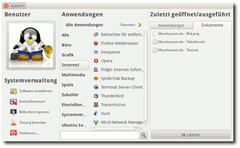
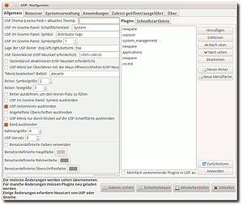

Ubuntu-System-Panel
Archivierte Anleitung
Dieser Artikel wurde archiviert, da er - oder Teile daraus - nur noch unter einer älteren Ubuntu-Version nutzbar ist. Diese Anleitung wird vom Wiki-Team weder auf Richtigkeit überprüft noch anderweitig gepflegt. Zusätzlich wurde der Artikel für weitere Änderungen gesperrt.
Zum Verständnis dieses Artikels sind folgende Seiten hilfreich:
Das Ubuntu-System-Panel (USP)  stellt ein alternatives Hauptmenü für GNOME zur Verfügung. Die Einstellungsmöglichkeiten sind beachtlich und das USP lässt sich viel besser an die eigenen Bedürfnisse anpassen als die voreingestellte Menüleiste von GNOME.
stellt ein alternatives Hauptmenü für GNOME zur Verfügung. Die Einstellungsmöglichkeiten sind beachtlich und das USP lässt sich viel besser an die eigenen Bedürfnisse anpassen als die voreingestellte Menüleiste von GNOME.
Installation¶
Es gibt zwei Möglichkeiten, das USP zu installieren. Einerseits wird vom Haupt-Entwickler ein PPA [1] (bis 11.10 „Oneiric Ocelot“) zur Verfügung gestellt, andererseits ist es auch möglich, das ganze Projekt per Subversion (SVN) herunterzuladen und selbst zu kompilieren.
|  |
| Ubuntu System Panel in Aktion |
PPA¶
Adresszeile zum Hinzufügen des PPAs:
ppa:malacusp/ppa
Hinweis!
Zusätzliche Fremdquellen können das System gefährden.
Ein PPA unterstützt nicht zwangsläufig alle Ubuntu-Versionen. Weitere Informationen sind der  PPA-Beschreibung des Eigentümers/Teams malacusp zu entnehmen.
PPA-Beschreibung des Eigentümers/Teams malacusp zu entnehmen.
Damit Pakete aus dem PPA genutzt werden können, müssen die Paketquellen neu eingelesen werden.
Nach dem Aktualisieren der Paketquellen werden folgende Pakete installiert [2]:
usp2 (ppa)
usp2-extras (ppa, zusätzliche Plug-ins)
 mit apturl
mit apturl
Paketliste zum Kopieren:
sudo apt-get install usp2 usp2-extras
sudo aptitude install usp2 usp2-extras
Jetzt kann das USP als neues Applet des Panels eingerichtet werden [3].
Manuell¶
Das USP wird mit Subversion verteilt und kann auch darüber leicht installiert werden. Dazu wird in einem Terminal [4] folgender Befehl ausgeführt:
svn checkout http://ubuntu-system-panel.googlecode.com/svn/trunk/ ubuntu-system-panel
Anschließend wechselt man in das Verzeichnis, in dem sich die heruntergeladenen Daten befinden, und startet die eigentliche Installation:
./ubuntu-system-panel/usp_update install fresh
Um die Installation abzuschließen, ist es nötig, sich einmal ab- und wieder anzumelden. Das USP kann jetzt als neues Applet des Panels eingerichtet werden [3].
Besonderheiten für 64-Bit-Systeme¶
Falls ein x86_64-System verwendet wird (und nur dann), müssen zusätzlich noch folgende Programme installiert werden [2]:
python-gnomedesktop
mit apturl
Paketliste zum Kopieren:
sudo apt-get install python-gnomedesktop
sudo aptitude install python-gnomedesktop
und je nach Konfiguration noch:
python-gtop
mit apturl
Paketliste zum Kopieren:
sudo apt-get install python-gtop
sudo aptitude install python-gtop
Aktualisierung¶
Bei der Installation ist das USP bereits auf dem aktuellsten Stand. Für ein späteres Update wechselt man in den Ordner, in den USP heruntergeladen wurde und führt dort folgenden Befehl aus:
./usp_update update
Deinstallation¶
Man wechselt in den Ordner, in den USP heruntergeladen wurde, und führt folgenden Befehl aus:
./usp_update uninstall
Um USP komplett (inklusive der Konfigurationsdateien) zu entfernen, gibt man folgenden Befehl ein:
./usp_update uninstall complete
|  |
| Konfiguration |
Konfiguration¶
Benutzen lässt sich das USP nun mit einem einfachen Klick auf das Applet im Panel. Einstellungen lassen sich vornehmen, wenn man einen  -Klick auf das Applet macht und im daraufhin erscheinenden Kontextmenü den Eintrag "Einstellungen" auswählt. Der Einstellungsdialog ist komplett ins Deutsche übersetzt und die verschiedenen Optionen sind meistens selbsterklärend.
-Klick auf das Applet macht und im daraufhin erscheinenden Kontextmenü den Eintrag "Einstellungen" auswählt. Der Einstellungsdialog ist komplett ins Deutsche übersetzt und die verschiedenen Optionen sind meistens selbsterklärend.
Die einzelnen Reiter des Einstellungsdialoges betreffen die einzelnen Bereiche des Menüs: "Allgemein", "Benutzer", "Systemverwaltung", "Anwendungen", "Zuletzt geöffnet/ausgeführt", "Über".
Erweiterungen¶
Im Reiter "Allgemein -> Plug-ins" ist es möglich, weitere Plugins hinzuzufügen. Dazu dienen die Schaltflächen "Hinzufügen" und "Entfernen". Außerdem lässt sich darüber die Anordnung der einzelnen Bereiche im Menü bestimmen, denn ein Plugin stellt jeweils einen Bereich des Menüs dar. Hier eine kleine Übersicht der im Standardumfang möglichen Plugins:
newpane - Leitet eine neue Spalte ein
uspuser - Benutzerinformationen
system_management - Befehle zum Systemmanagement
applications - Anwendungsbereich
recent - Verlaufsliste der zuletzt verwendeten Dokumente
places - Liste der Orte, wie sie aus der Standard-Hauptmenüleiste bekannt ist.
In der Standardeinstellung besteht das Menü also aus drei Spalten:
Spalte: Informationen zum aktuellen Benutzer und Systemverwaltungs-Optionen
Spalte: Anwendungen
Spalte: Zuletzt verwendete Dokumente
Falls das Paket usp2-extras aus dem PPA installiert wurde, stehen noch weitere Plug-ins, wie z.B. ein Terminal, ein Taschenrechner, Datum/Zeit-Funktionen, Notizen und einige mehr zur Verfügung.
Design¶
USP verwendet keine Skins oder Designs, denn es hat keine eigene "Theme-Engine". Statt dessen nutzt es das globale GTK+-Design des Systems, auf dem es installiert ist. Allerdings lassen sich im Reiter "Allgemein" im unteren Bereich eigene Farbkombinationen einstellen. Diese werden verwendet, wenn man vor "Benutzerdefinierte Farben Verwenden" ein Häkchen setzt.
 Übersichtsartikel
Übersichtsartikel- Erstellt mit Inyoka
-
 2004 – 2017 ubuntuusers.de • Einige Rechte vorbehalten
2004 – 2017 ubuntuusers.de • Einige Rechte vorbehalten
Lizenz • Kontakt • Datenschutz • Impressum • Serverstatus -
Serverhousing gespendet von